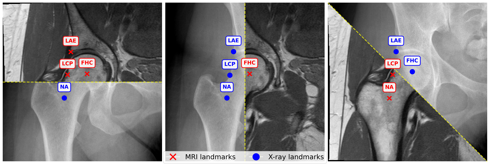
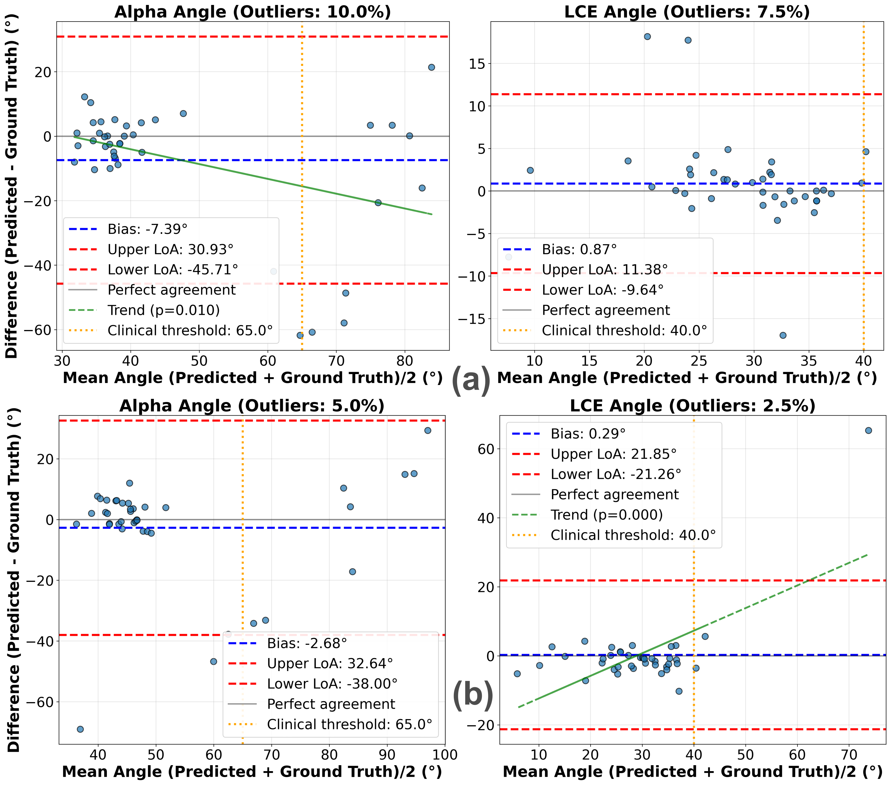

Di Via, R., Pastore, V. P., Odone, F., Glyn-Jones, S., & Voiculescu, I. (2026). Automated Landmark Detection for assessing hip conditions: A Cross-Modality Validation of MRI versus X-ray. In IEEE International Symposium on Biomedical Imaging (ISBI).
Many clinical screening decisions are based on angle measurements. In particular, FemoroAcetabular Impingement (FAI) screening relies on angles traditionally measured on X-rays. However, assessing the height and span of the impingement area requires also a 3D view through an MRI scan. The two modalities inform the surgeon on different aspects of the condition.
In this work, we conduct a matched-cohort validation study (89 patients, paired MRI/X-ray) using standard heatmap regression architectures to assess cross-modality clinical equivalence. Seen that landmark detection has been proven effective on X-rays, we show that MRI also achieves equivalent localisation and diagnostic accuracy for cam-type impingement. Our method demonstrates clinical feasibility for FAI assessment in coronal views of 3D MRI volumes, opening the possibility for volumetric analysis through placing further landmarks.
These results support integrating automated FAI assessment into routine MRI workflows, eliminating redundant X-ray exposure while enabling volumetric analysis.
We formulate FAI angle computation as a landmark detection problem. For each hip, we localise four annotated anatomical keypoints: femoral head centre (FHC), neck-axis point (NA) along the femoral neck centreline, lateral acetabular edge (LAE), and lateral cam point (LCP) where the femoral head deviates from sphericity.
The α-angle is computed as the angle between the femoral neck axis (FHC→NA) and the cam deformity vector (FHC→LCP). The LCE angle is calculated as the angle between the vertical axis and the acetabular coverage vector (FHC→LAE), quantifying lateral acetabular overhang.
Following established practice in medical landmark detection, we adopt a heatmap regression formulation. For each landmark k, we generate a ground-truth Gaussian heatmap H_k centered at the annotated location. Encoder–decoder networks are trained to predict heatmaps from input images (512×512) by minimizing the negative log-likelihood (NLL) over the four landmarks. At inference, landmark coordinates are extracted as the spatial argmax of each predicted heatmap.
We employ UNet++ with a ResNet18 encoder (ImageNet-initialised) independently on the MRI and X-ray datasets. For robustness, we employ test-time augmentation (TTA) by averaging heatmap predictions across different augmented views per test image.
We use a paired dataset of 89 patients who underwent AP pelvic X-ray and multiple hip MRI for FAI evaluation, collected at Oxford University as part of the FAIT trial. The training:validation:test split is 65:10:25, balanced across α-angle distributions.
| Landmark | Mean RE (mm) X-ray | Mean RE (mm) MRI | Median RE (mm) X-ray | Median RE (mm) MRI |
|---|---|---|---|---|
| FHC | 1.07±0.08 | 1.78±0.13 | 1.01±0.11 | 0.84±0.14 |
| NA | 2.35±1.02 | 1.25±0.30 | 1.61±0.17 | 1.13±0.36 |
| LAE | 3.18±0.64 | 3.17±0.30 | 2.81±0.74 | 2.78±0.09 |
| LCP | 5.50±1.01 | 5.72±0.76 | 1.76±0.66 | 2.55±0.64 |
| Overall | 3.02±0.10 | 2.98±0.23 | 1.49±0.16 | 1.62±0.29 |
SDR@2/3/4mm (%) — X-ray: 62.5/79.2/85.4 MRI: 58.3/73.5/83.1
| Metric | X-ray | MRI |
|---|---|---|
| LCE-angle agreement | ||
| MAE (°) | 2.97±1.14 | 2.96±0.52 |
| Median (°) | 2.22±0.42 | 1.28±0.20 |
| ICC (2,1) | 0.82±0.20 | 0.73±0.14 |
| α-angle agreement | ||
| MAE (°) | 12.18±1.63 | 13.64±1.77 |
| Median (°) | 5.61±1.41 | 5.45±0.77 |
| ICC (2,1) | 0.52±0.06 | 0.41±0.15 |
| Cam screening (α > 65°) | ||
| Accuracy (%) | 87.50 | 87.50 |
| Sensitivity / Specificity (%) | 54.55 / 100.00 | 54.55 / 100.00 |
| PPV / NPV (%) | 100.00 / 85.29 | 100.00 / 85.29 |
| Model | TTA | MRE (mm) | SDR@2mm (%) | Cam Acc. (%) |
|---|---|---|---|---|
| UNet++ (ResNet18) | ✗ | 3.02±0.28 | 56.46±5.87 | 82.33±3.79 |
| ✓ | 2.98±0.23 | 58.44±4.86 | 84.75±2.77 | |
| UNet++ (VGG16) | ✗ | 3.33±0.03 | 56.25±0.89 | 80.00±7.07 |
| ✓ | 3.29±0.36 | 57.09±1.93 | 80.17±4.41 | |
| UNet (MiT-B1) | ✗ | 4.11±0.84 | 54.79±1.44 | 66.67±12.58 |
| ✓ | 3.98±0.54 | 57.33±0.91 | 69.83±6.85 | |
| DPT (MaxViT-Base) | ✗ | 3.91±0.87 | 55.50±0.71 | 73.75±8.84 |
| ✓ | 3.63±0.99 | 55.94±1.33 | 77.50±10.61 |
UNet++ with ResNet18 achieves optimal performance. TTA consistently improves all architectures by 1.4-3.6 percentage points in cam accuracy.

Example of paired anteroposterior pelvic X-ray and corresponding T1-weighted MRI (slice 10) from the same subject, showing annotated landmarks: femoral head centre (FHC), neck-axis point (NA), lateral acetabular edge (LAE), and lateral cam point (LCP), illustrating their spatial correspondence across modalities.

Bland--Altman plots comparing predicted and ground-truth α- (left) and LCE-angles (right) for MRI (a) and X-ray (b). Each plot shows the mean of the two measurements on the x-axis and their difference on the y-axis; dashed blue line indicates mean bias and red ones mark the 95% limits of agreement (LoA).
For the LCE-angle, MRI shows minimal bias (0.87°) and narrow LoA (±10.5°) without proportional bias (p=0.304). In contrast, X-ray shows wider LoA (±21.6°) and proportional bias (p<0.001), with errors increasing at higher acetabular coverage, suggesting more stable estimation from MRI.
For the α-angle, both modalities underestimate clinician measurements (X-ray: -2.68°, MRI: -7.39°) with broad LoA (X-ray: ±35.3°, MRI: ±38.3°). X-ray errors remain magnitude-independent (p=0.518), whereas MRI shows proportional bias (p=0.010), reflecting slice-selection sensitivity. Despite these biases, both modalities achieve reliable cam-type classification (specificity 100%, sensitivity 54.6%), indicating that residual variability mainly arises from landmark ambiguity rather than modality differences.
@inproceedings{divia2026hip,
title={Automated Landmark Detection for assessing hip conditions: A Cross-Modality Validation of MRI versus X-ray},
author={Di Via, Roberto and Pastore, Vito Paolo and Odone, Francesca and Glyn-Jones, Si{\^o}n and Voiculescu, Irina},
booktitle={IEEE International Symposium on Biomedical Imaging (ISBI)},
year={2026}
}Di Via, R., Pastore, V. P., Odone, F., Glyn-Jones, S., & Voiculescu, I. (2026). Automated Landmark Detection for assessing hip conditions: A Cross-Modality Validation of MRI versus X-ray. In IEEE International Symposium on Biomedical Imaging (ISBI).